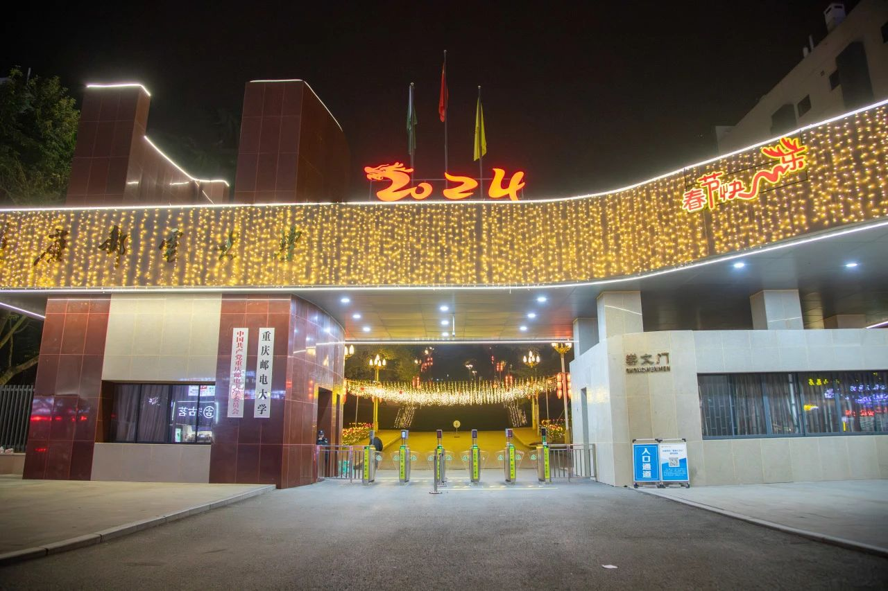
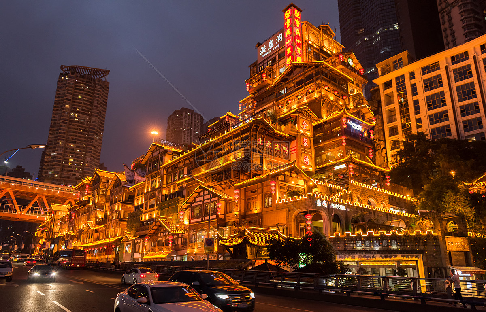
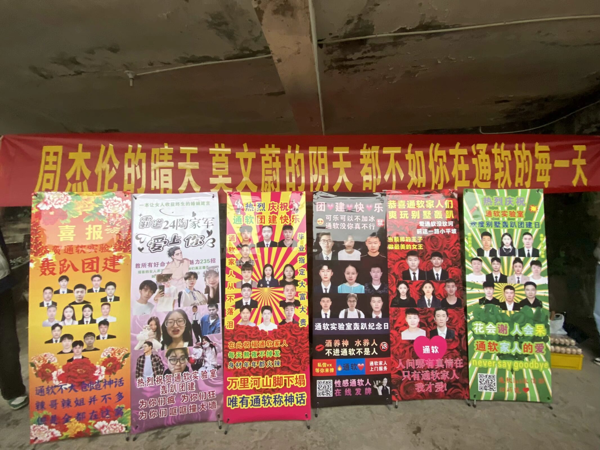

在上一年的这个时间点，我同所有备考复试的你们一样，在人满为患的图书馆内温习着通信原理，在万物互联的网上搜寻着复试技巧，在忐忑不安的心中期待着顺利上岸。时光如白驹过隙，转眼间已过去一年，作为学长而言，和你们讲一讲研究生的这一年所经历的蜕变。

首先说一说重庆这个地方，作为一个湖南人来说，我是第一次跑这么远的地方来上学，不过对于这次的求学经历来说，我是十分满意的。重庆，是一个充满色彩的地方，这里的最佳旅游景点我认为是洪崖洞。洪崖洞由吊脚楼和仿古商业街构成，整个建筑群依山而建，错落有致，尤其是夜景，与日本动漫大师宫崎骏"千与千寻"中的酒屋相似度极高。

其次说一说进入通软实验室带给我的感受。在这个大家庭里待了半年多，与志同道合的好朋友们融洽相处，一起热爱生活、享受生活。平时大家也会相互打趣开玩笑，但是到了关键时刻绝对能够相信他们，能够无所顾忌地把后背交给他们。当然在闲暇时刻我们一大家子人会相约乒乓球场、羽毛球场，挥洒着属于我们的青春。在这里，感受到的是我从未体验过的团结氛围，我们众志成城，相互陪伴，共同进步，一起克服成长道路上所面临的艰难险阻。很感谢当时的我选择了通软实验室这个大家庭，也很感谢通软实验室的师兄师姐们选择了我，让我同大家一起，有了这样快乐且难忘的研究生生活。

最后简单做个总结。平时在实验室里，明显能感受到我的学习效率有质的飞跃，很轻易就能进入学习状态。“吃好、玩好、睡好、学好”这是我们实验室的宗旨，也是老师所提倡的。 热爱也许是我们对抗平庸枯燥生活的一种方法。“实验室招的是同学，而不是分数”这是老师和师兄师姐们曾经对我们说过的。

党的十八大以来，习近平总书记多次论述“幸福不会从天而降”“新时代是奋斗者的时代”“奋斗本身就是一种幸福”。一届又一届的后浪都是在陶老师的带领下通过不断努力，辛勤奋斗才能让我们 “实验室”这艘船不断乘风破浪，勇往直前。